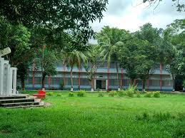

Here's the facebook link of our School:

I'm a student of UIU. I live in Badda
My home district is in Bogra
I've obtained GPA 5.0 both in SSC and HSC. My school and college both were in Bogra.
Here's the facebook link of our School:
Here is the link of my college:

From the school life, my hobby was to be a computer engineer and I was good at mathematics and physics. My academic result was also very good. In HSC level, my mathematics and physics knowledge was pretty good enough, and gradually I started feeling that I can be a good computer engineer. That's why I came to this university to persue my undergraduate degree on CSE.